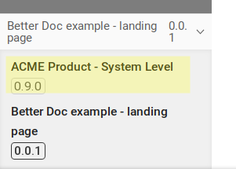
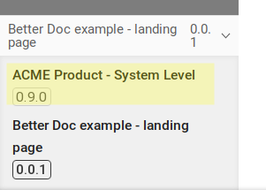

Landing Page
|
You can switch to other parts or versions of the documentation in the bottom left corner of the page. E.g. by clicking the link to the systems documentation.  |
|
You can switch to other parts or versions of the documentation in the bottom left corner of the page. E.g. by clicking the link to the systems documentation.  |